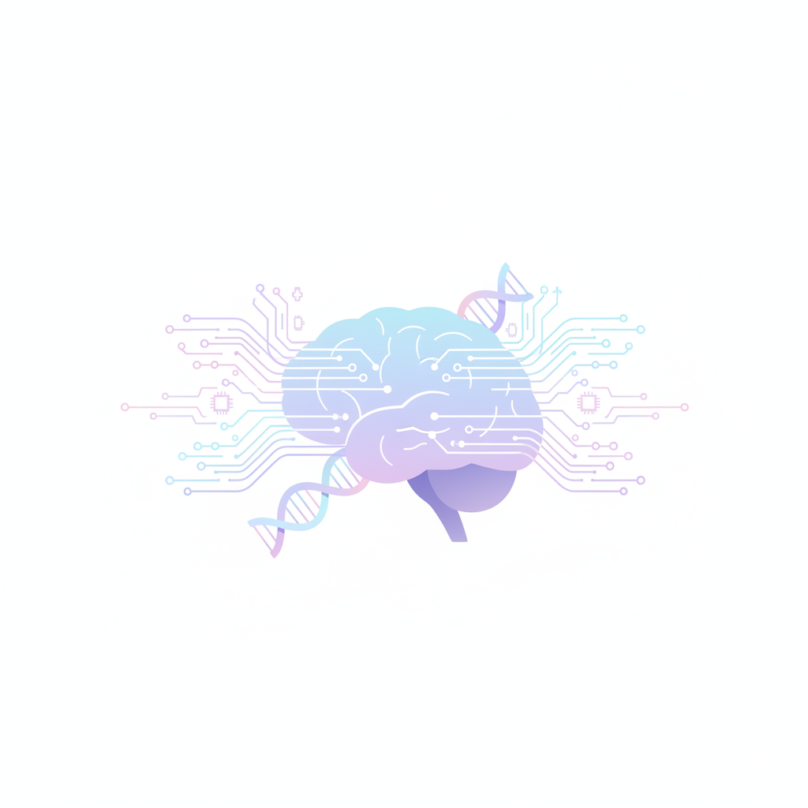

Qui soc?
De les dades a la innovació. Del coneixement al futur.
Combino la meva experiència en docència en formació professional d'informàtica amb la investigació tecnològica d'avantguarda, contribuint tant a la innovació com a la formació del talent digital del futur. Forma part de la comunitat!
Coneix-me!Projectes
Coneix els diferents projectes en els quals participo.
Reflexions digitals
Descobreix les meves últimes reflexions sobre els reptes i oportunitats que planteja la transformació digital en àmbits com la investigació, l'educació i el desenvolupament tecnològic.